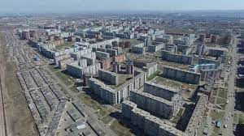

Мой первый сайт. Основы веб - верстки.
Меня зовут Степанов Сергей Александрович и
это мой первый сайт
!

Немного о себе:
Я ученик университета Innopolis.
Список языков, которые мы изучаем на курсе:
Для обучения мне требуються:
- Google Chrome
- Visual Studio Code
- Telegram
Живу я в городе КРАСНОЯРСКЕ, м-он Северный. Люблю свой район и очень рад
тому, что живу именно тут.

На данный момент я являюсь инвалидом и живу на пособие по инвалидности
(3 группа). На этот курс я пришел по обьявлению в интернете об учебе,
которое оплачивает государство, условиями зачисления были наличие
высшего образования и как раз таки инвалидность. У меня был диплом о ВО
государственного образца и мне одобрили заявление. Спасибо огромное,
благодаря этому курсу я могу теперь освоить профессию, о которой всегда
мечтал, а мечтал я версать сайты с нуля. Лет 10-15 назад я создавал
сайты на бесплатных онлайн конструкторах, копирайтил и рерайтил контент,
у меня в руках были естественно не такие продвинутые знания, какие мы
проходим сейчас при прохождении этого курса и сайты были скажем так не
очень крутые. Но мое внимание привлекало в конструкторах то, что там
если уметь версать то можно было бы избавиться от стандартного шаблона и
загрузить свой код. Поэтому для меня писать граммотный и чистый код
являеться приоритетом в ИТ.